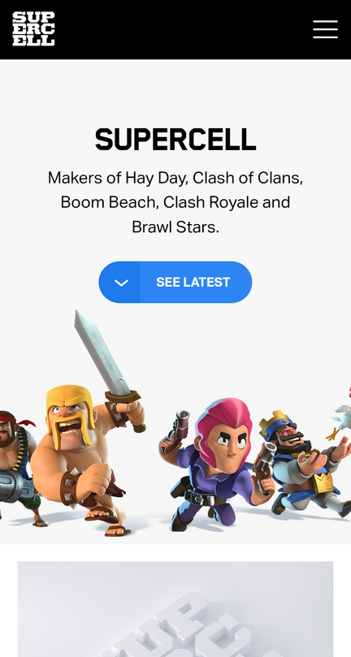

Fitt's Law
Nintendo
This page shows a great example of following Fitt's Law in design because it has large spread out icons. The selections on the page are spread out in some spaces, but the icon sizes and positions are adjusted to accomodate.
White Space and
Clean Design
Supercell
The good use of white space on this design draws the users attention to the company description and stears the user to look at their latest work. Also, it makes the page look clean because the topics and links are easily identified.
PARC: Contrast
Riot Games
There are many colors and links on this page. The designer did a great job finding contrasting colors for all the different options, links, and menus.